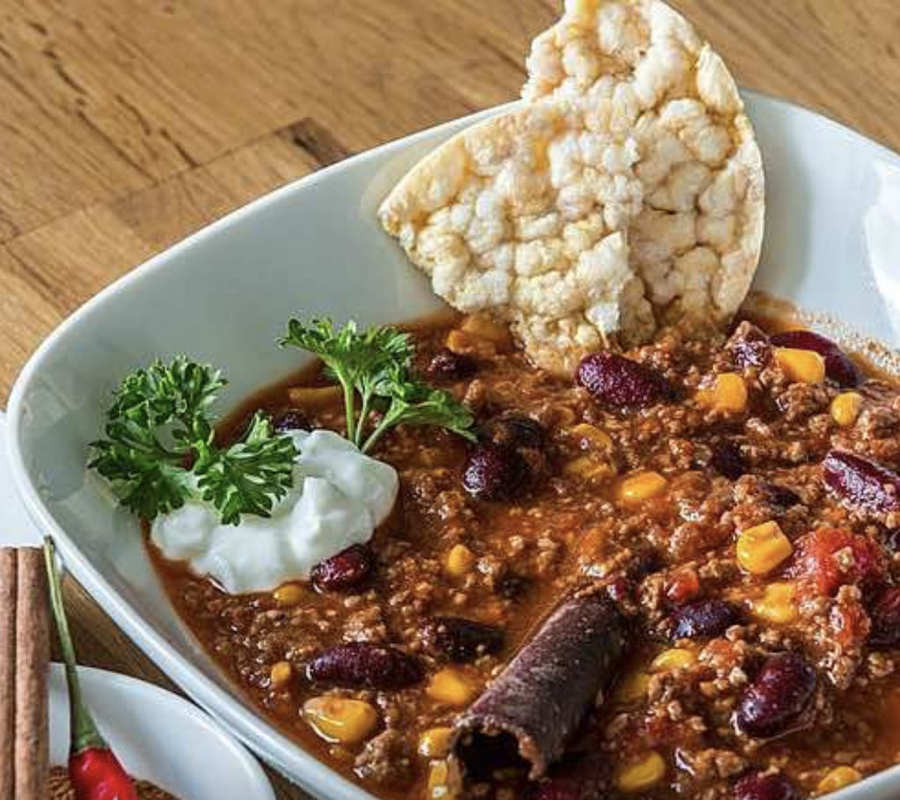

Chili con carne

Description
Chili con carne is a spicy stew containing chili peppers, meat (usually beef), tomatoes and often pinto beans or kidney beans.
Other seasonings may include garlic, onions, and cumin. The dish originated in northern Mexico or southern Texas.
Ingredients
- 2 big onions
- 1 garlic clove
- 2 chili peppers
- 2 teaspoons chili powder
- 1 teaspoon cumin
- 800g minced beef
- 3 cans of peeled tomatoes
- 1 cinnamon stick
- salt & pepper
- 2 cans of kidney beans
Steps
- Dice onions & garlic and sauté in hot oil for 5 minutes
- Add chopped chilies with seeds, cumin and chili powder, sauté for another 2 minutes
- Add minced beef to pot & fry over high heat until crumbly
- Stir in cannced tomatoes & cinnamon stick, season well with salt & pepper
- Simmer over medium heat for 90 minutes, stirring occasionally
- 30 minutes before end, add beans